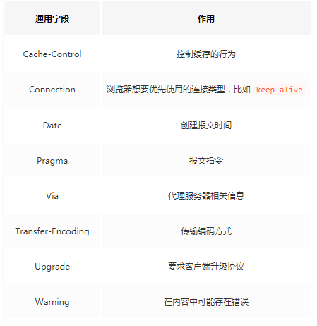
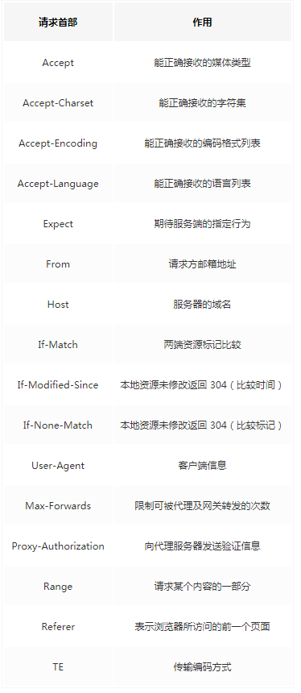
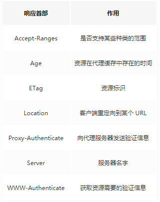
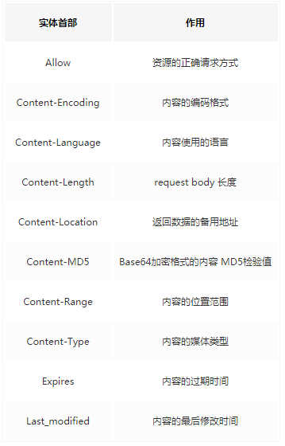

知识点
Transport(运输层)
UDP
- UDP 相比 TCP 简单的多，不需要建立连接，不需要验证数据报文，不需要流量控制，只会把想发的数据报文一股脑的丢给对端
- 虽然 UDP 并没有 TCP 传输来的准确，但是也能在很多实时性要求高的地方有所作为
TCP
建立连接需要三次握手，断开连接需要四次握手
建立连接
- 客户端向服务端发送连接请求报文段。该报文段中包含自身的数据通讯初始序号。请求发送后，客户端便进入 SYN-SENT 状态。
- 服务端收到连接请求报文段后，如果同意连接，则会发送一个应答，该应答中也会包含自身的数据通讯初始序号，发送完成后便进入 SYN-RECEIVED 状态。
- 当客户端收到连接同意的应答后，还要向服务端发送一个确认报文。客户端发完这个报文段后便进入 ESTABLISHED 状态，服务端收到这个应答后也进入 ESTABLISHED 状态，此时连接建立成功。
断开连接
- 若客户端 A 认为数据发送完成，则它需要向服务端 B 发送连接释放请求。
- B 收到连接释放请求后，会告诉应用层要释放 TCP 链接。
- B 如果此时还有没发完的数据会继续发送，完毕后会向 A 发送连接释放请求，然后 B 便进入 LAST-ACK 状态。
- A 收到释放请求后，向 B 发送确认应答，此时 A 进入 TIME-WAIT 状态。该状态会持续 2MSL（最大段生存期，指报文段在网络中生存的时间，超时会被抛弃） 时间，若该时间段内没有 B 的重发请求的话，就进入 CLOSED 状态。当 B 收到确认应答后，也便进入 CLOSED 状态。
滑动窗口解决了数据的丢包、顺序不对和流量控制问题
拥塞窗口实现了对流量的控制，保证在全天候环境下最优的传递数据
Application(应用层)
HTTP 及 TLS
Http
请求行
基本由请求方法、URL、协议版本组成
请求方法
- Post
- Get
首部
- 分为请求首部和响应首部，并且部分首部两种通用
实体
TSL
一种加密协议；TSL协议位于传输层之上，协议层之下
两种加密技术
对称加密
非对称加密
简单流程如下：首先服务端将公钥公布出去，那么客户端也就知道公钥了。接下来客户端创建一个秘钥，然后通过公钥加密并发送给服务端，服务端接收到密文以后通过私钥解密出正确的秘钥，这时候两端就都知道秘钥是什么了。
TSL握手
- 客户端发送一个随机值以及需要的协议和加密方式。
- 服务端收到客户端的随机值，自己也产生一个随机值，并根据客户端需求的协议和加密方式来使用对应的方式，并且发送自己的证书（如果需要验证客户端证书需要说明）
- 客户端收到服务端的证书并验证是否有效，验证通过会再生成一个随机值，通过服务端证书的公钥去加密这个随机值并发送给服务端，如果服务端需要验证客户端证书的话会附带证书
- 服务端收到加密过的随机值并使用私钥解密获得第三个随机值，这时候两端都拥有了三个随机值，可以通过这三个随机值按照之前约定的加密方式生成密钥，接下来的通信就可以通过该密钥来加密解密
HTTP/1 HTTP/2 及 HTTP/3
- HTTP/1.x 有连接无法复用、队头阻塞、协议开销大和安全因素等多个缺陷
- HTTP/2 通过多路复用、二进制流、Header 压缩等等技术，极大地提高了性能，但是还是存在着问题的
- QUIC 基于 UDP 实现，是 HTTP/3 中的底层支撑协议，该协议基于 UDP，又取了 TCP 中的精华，实现了即快又可靠的协议
常见状态码
2XX 成功
- 200 OK，表示从客户端发来的请求在服务器端被正确处理
- 204 No content，表示请求成功，但响应报文不含实体的主体部分
- 205 Reset Content，表示请求成功，但响应报文不含实体的主体部分，但是与 204 响应不同在于要求请求方重置内容
- 206 Partial Content，进行范围请求
3XX 重定向
- 301 moved permanently，永久性重定向，表示资源已被分配了新的 URL
- 302 found，临时性重定向，表示资源临时被分配了新的 URL
- 303 see other，表示资源存在着另一个 URL，应使用 GET 方法获取资源
- 304 not modified，表示服务器允许访问资源，但因发生请求未满足条件的情况
- 307 temporary redirect，临时重定向，和302含义类似，但是期望客户端保持请求方法不变向新的地址发出请求
4XX 客户端错误
- 400 bad request，请求报文存在语法错误
- 401 unauthorized，表示发送的请求需要有通过 HTTP 认证的认证信息
- 403 forbidden，表示对请求资源的访问被服务器拒绝
- 404 not found，表示在服务器上没有找到请求的资源
5XX 服务器错误
- 500 internal sever error，表示服务器端在执行请求时发生了错误
- 501 Not Implemented，表示服务器不支持当前请求所需要的某个功能
- 503 service unavailable，表明服务器暂时处于超负载或正在停机维护，无法处理请求
试题
UDP 与 TCP 的区别是什么？
TCP与UDP是相反的，建立连接断开连接都需要进行握手。在传输数据的过程中，通过各种算法保证数据的可靠性，带来的问题就是相比UDP来说没有那么高效。
为什么 TCP 建立连接需要三次握手，明明两次就可以建立起连接
因为这是为了防止出现失效的连接请求报文段被服务端接收的情况，从而产生错误。
为什么 A 要进入 TIME-WAIT 状态，等待 2MSL 时间后才进入 CLOSED 状态？
为了保证 B 能收到 A 的确认应答。若 A 发完确认应答后直接进入 CLOSED 状态，如果确认应答因为网络问题一直没有到达，那么会造成 B 不能正常关闭。
Post 和 Get 的区别？
- Get 请求能缓存，Post 不能
- Post 相对 Get 安全一点点，因为Get 请求都包含在 URL 里（当然你想写到 body 里也是可以的），且会被浏览器保存历史纪录。Post 不会，但是在抓包的情况下都是一样的。
- URL有长度限制，会影响 Get 请求，但是这个长度限制是浏览器规定的，不是 RFC 规定的
- Post 支持更多的编码类型且不对数据类型限制
示例图
首部
- 通用首部

- 请求首部

- 响应首部

- 实体首部

扩展链接
https://blog.fundebug.com/2019/03/07/understand-http2-and-http3/